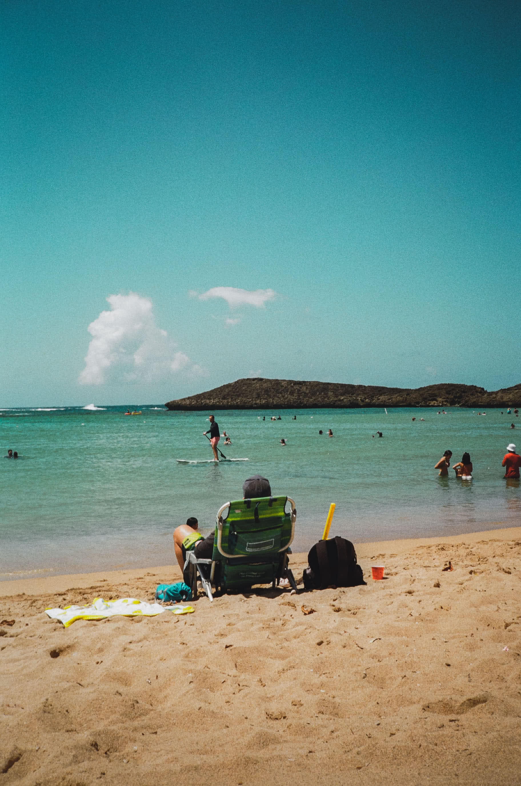
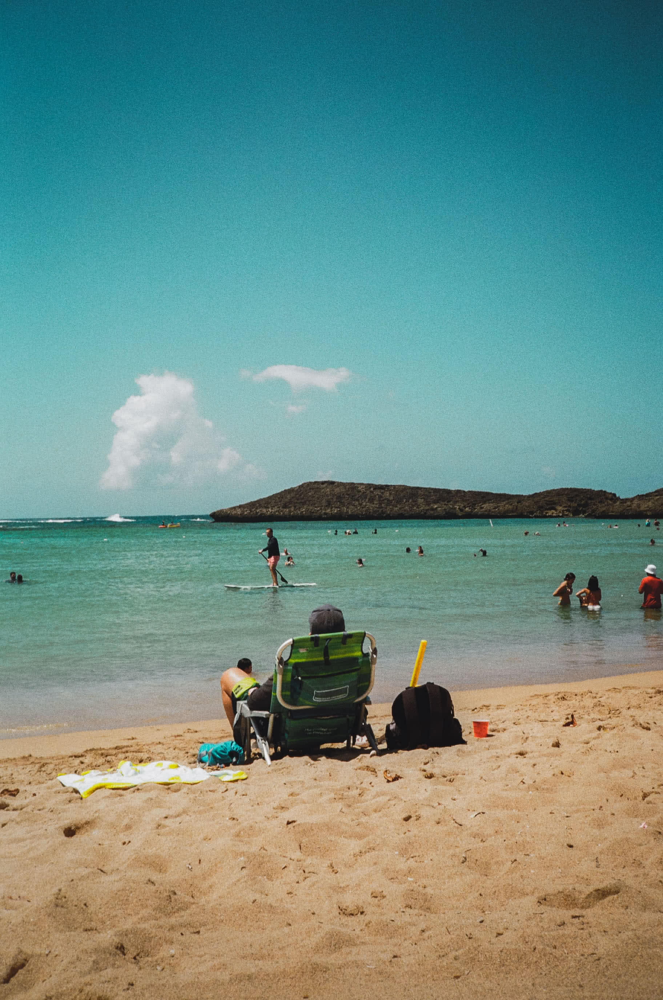
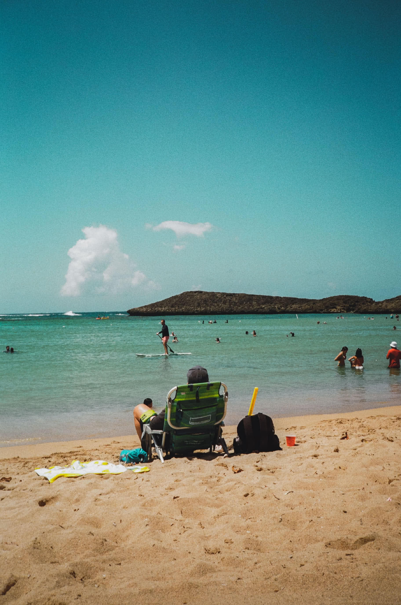

**
images below are all Dubble film Apollo 200


Dear friend,
I am writing this original first draft on the flight back from Puerto Rico. It was not what I had expected, but I didn’t know what to expect, if I’m being honest.
I can say that I felt safer in Puerto Rico than I do in the city (in terms of COVID restrictions). The restaurants, shopping centers, and beaches all took proper precautions to keep people safe. For instance, whenever one enters a supermarket, they have a designated person at the entrance who scans your temperature, and they spray your hands with hand sanitizer.
While many may claim that stores back in the U.S. check for body temperature, of the places that I have personally visited, there is no person there to check and verify one’s temperature. If anything, it is only a machine on a stand, and since there is no person to verify, this most likely makes the machine’s use optional, unfortunately.
The food was amazing as per usual; however, it was primarily fried foods with oil and grease, so not the healthiest of foods if one wants to keep their health risk low. Still, it was a lovely cheat week.
Below are some shots I took on Kodak Color Plus film stock and there will be a note indicating which is which.
Since my trip – which was back in March – I have started collecting a series of cloud images for a Zine I will (hopefully) make sometime in the farr future.
**
images below are all Kodak Color Plus

**
images below are all Dubble film Apollo 200